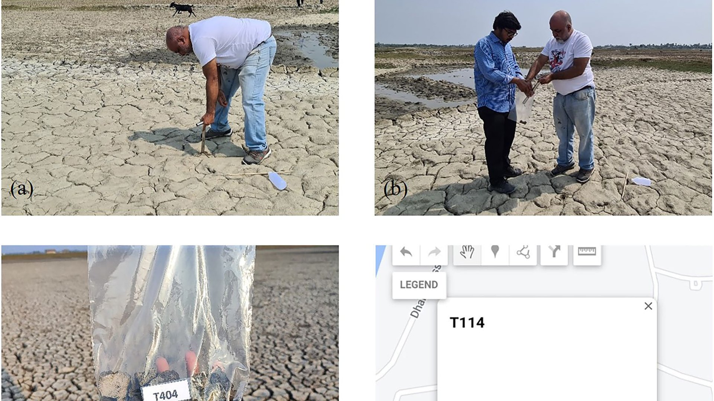
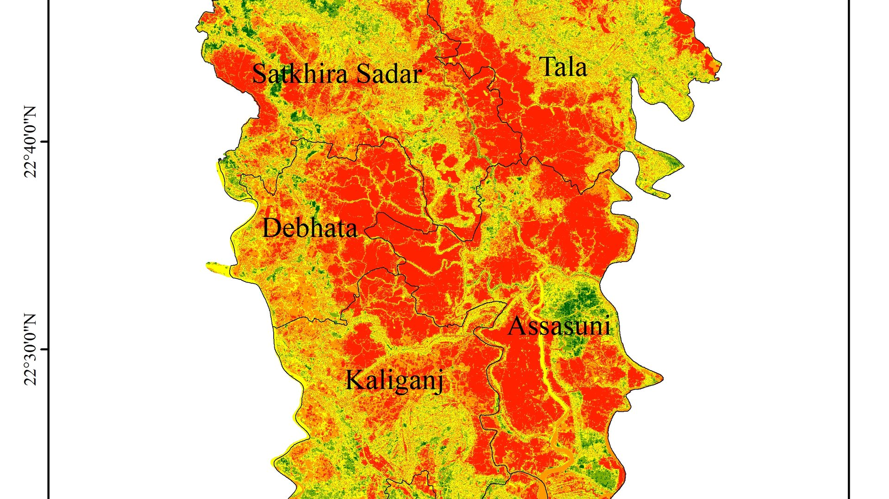
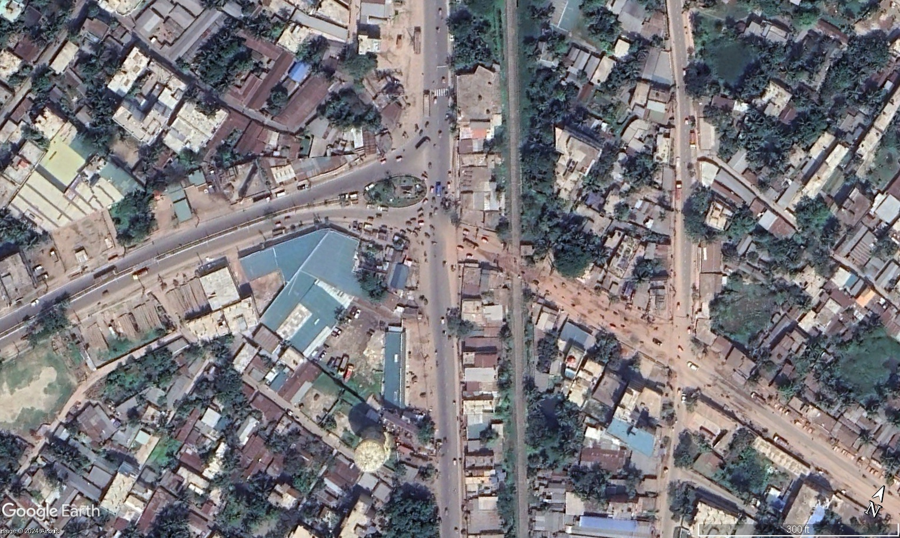

Earth observation
Landsat · Sentinel · MODIS · ERA5-Land · SRTM · LULC change · LST · spectral indices
Google Earth Engine · ArcGIS Pro · QGIS · ENVIOpen to funded Master’s research and international geospatial roles
Geospatial Researcher & Urban Planner
I use remote sensing, GIS, and spatial machine learning to understand environmental change and support better decisions for land, food systems, and cities.

01 · About
I am an urban planner and geospatial researcher based in Dhaka, Bangladesh. My work connects Earth observation and field data with decisions about climate risk, soil and agriculture, river corridors, and urban growth.
I have contributed to research connected with MIT’s Earth Signals and Systems Group, co-authored papers in Scientific Data and Smart Agricultural Technology, and produced GIS analysis for government, GIZ, and World Bank assignments. I am now seeking a funded research-based Master’s position and international geospatial work where these methods can be applied across vulnerable regions.
Download full CV →Landsat · Sentinel · MODIS · ERA5-Land · SRTM · LULC change · LST · spectral indices
Google Earth Engine · ArcGIS Pro · QGIS · ENVIAHP/MCDA · fuzzy overlay · suitability analysis · kriging · geodatabases · terrain analysis
ArcGIS Pro · QGIS · GeoDa · Power BIRandom Forest · Gradient Boosting · SVM · ANN/MLP · KNN · cross-validation
Python · scikit-learn · GeoPandas · RasterioRTK GNSS · UAV survey · soil and water sampling · KoBoToolbox · land-use planning
Agisoft Metashape · AutoCAD · technical reporting02 · Experience
Geodatabase development, urban suitability analysis, thematic mapping, and technical reports for three upazila master plans under UTMIDP.
EV-infrastructure suitability analysis for a GIZ assignment, rural-electrification support for a World Bank project in The Gambia, and spatial data management.
Google Earth Engine workflows, coastal field sampling, laboratory data, kriging, Python raster processing, and community research for climate and environmental studies.
Supported DPP preparation, project schedules, logframes, and budget documentation for a solid-waste management master plan.
03 · Selected work
Case studies document the question, method, evidence, contribution, and limitations.
 Featured collaboration
Featured collaborationClimate risk · Field research · GIS
 Flagship planning project
Flagship planning projectGovernment planning · GIS · MCDA

Thesis · Remote sensing · ML

Peer-reviewed · Elsevier · ML

Scientific Data · Open data

Working paper · Fuzzy GIS

River systems · Landsat

Climate adaptation · GeoAI

Sentinel-2 · ML

Transport · VISSIM
04 · Publications
Faisal et al. · Smart Agricultural Technology, 12, 101403 · Co-author
Sarkar et al. · Scientific Data, 12, 1074 · Co-author
Khulna University of Engineering & Technology
Working papers and research case studies; status is stated on each project page.
05 · Contact
I am interested in funded research-based Master’s opportunities and international roles in GIS, Earth observation, spatial data science, and climate or environmental planning.